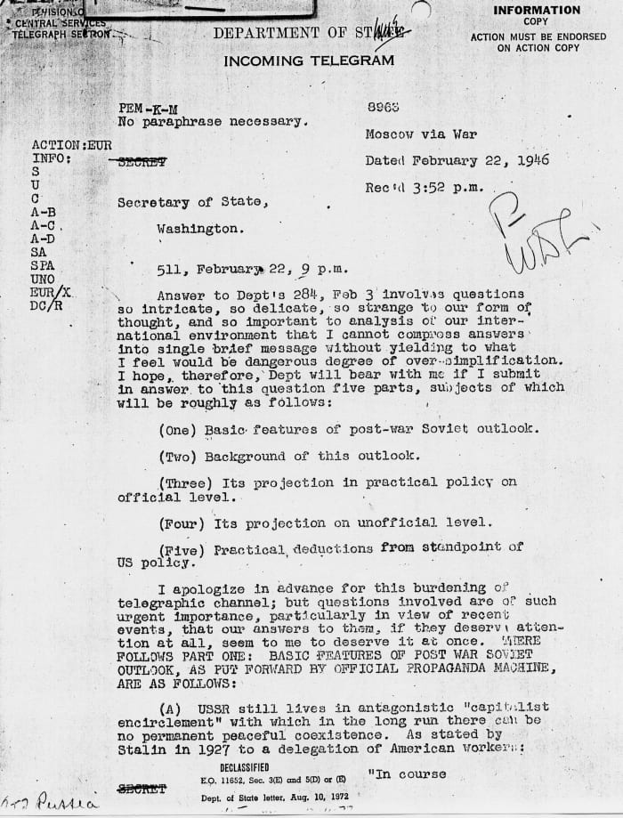

USA

USA and USSR
During World War II, the United States and the Soviet Union fought together as allies against the Axis powers. However, the relationship between the two nations was a tense one. Americans had long been wary of Soviet communism and concerned about Russian leader Joseph Stalin’s tyrannical rule of his own country. For their part, the Soviets resented the Americans’ decades-long refusal to treat the USSR as a legitimate part of the international community as well as their delayed entry into World War II, which resulted in the deaths of tens of millions of Russians. After the war ended, these grievances ripened into an overwhelming sense of mutual distrust and enmity.

By the end of WW2, most American officials agreed that the best defense against the emerging Soviet threat was a strategy they called “containment” In his famous “Long Telegram,” the diplomat George Kennan explained the policy: The Soviet Union, he wrote, was “a political force committed fanatically to the belief that with the U.S. there can be no permanent modus vivendi.” As a result, America’s only choice was the “long-term, patient but firm and vigilant containment of Russian expansive tendencies.” “It must be the policy of the United States,” he declared before Congress in 1947, “to support free peoples who are resisting attempted subjugation…by outside pressures.” This way of thinking would shape American foreign policy for the next four decades.

The containment policy also provided rationale for an arms buildup in the United States of a scale, never before seen in American history. Under Truman’s recommendation that the country use military force to contain communist expansionism, the USA saw a four-fold increase in defense spending. In particular, the development of atomic weapons was encouraged by American officials. In 1949, the Soviets had tested an atom bomb of their own. In response, President Truman announced the construction of an even more destructive hydrogen bomb, or “superbomb”. Stalin followed suit. The stakes of the war had increased to unimaginable heights with the ever-present threat of nuclear annihilation greatly impacting American everyday life.
The cold war
The Cold War was fought on many fronts except traditional military ones. Proxy wars in East Asia as well as the dramatic Space Race served as a playing field for the two superpowers. The first military action of the Cold War began when the Soviet-backed North Korean People’s Army invaded its pro-Western neighbor to the south. America responded out of fear from communism spreading in the region, with President Truman sending American troops into Korea, which eventually dragged the war to a stalemate and ended it in 1953. Many other conflicts would take place, in Europe with the newly established “Iron Curtain” between eastern and western bloc countries and in the unstable, postcolonial “Third World”. The most famous conflict out of all being the one in Vietnam, where the collapse of the French colonial regime had led to a struggle between the American-backed nationalist Ngo Dinh Diem in the south and the communist nationalist Ho Chi Minh in the north.
The collapse of the soviet union
The conflict started closing off when President Richard Nixon took office and began to implement a new, less hostile approach to international relations. On the other side, the Soviet Union was quickly dissolving and eventually collapsed in 1991, ending the conflict.